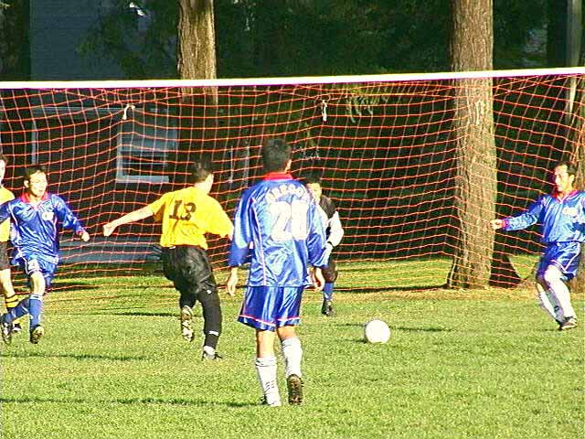
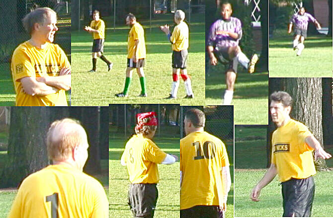
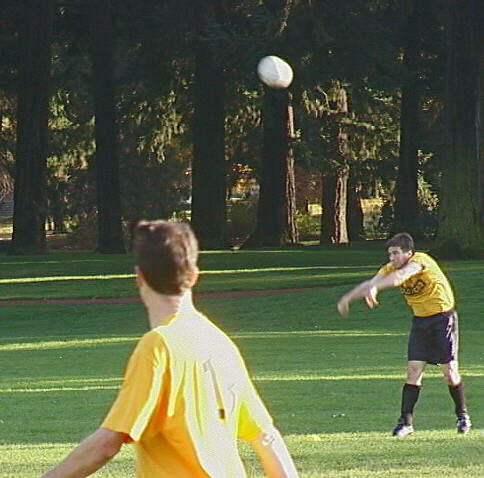
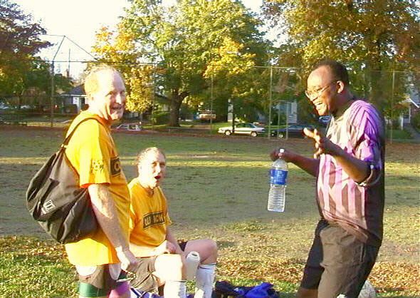
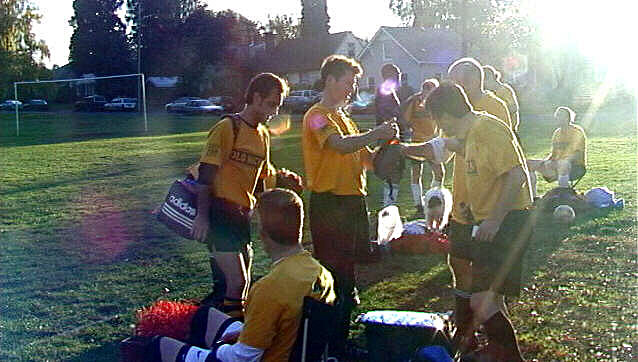

 Glenn Fithian-Barret takes on four defenders with total aplomb - and lack of success. But it sure looks good, doesn't it? |
|
 Images of Old Nicks doing what we do best - mostly standing around. |
|
 Rob Johnsonis able to achieve escape velocity and puts the ball into low orbit over Portland. |
|
 Don Makande explains the intricacies of winning soccer to bemused forwards Jim Hilliker and Jim Brinkman. |
|
 Post game wrap-up on a glorious October 2001 afternoon. No one is in a rush to leave knowing that the cold, rainy game days are just around the corner. |
|